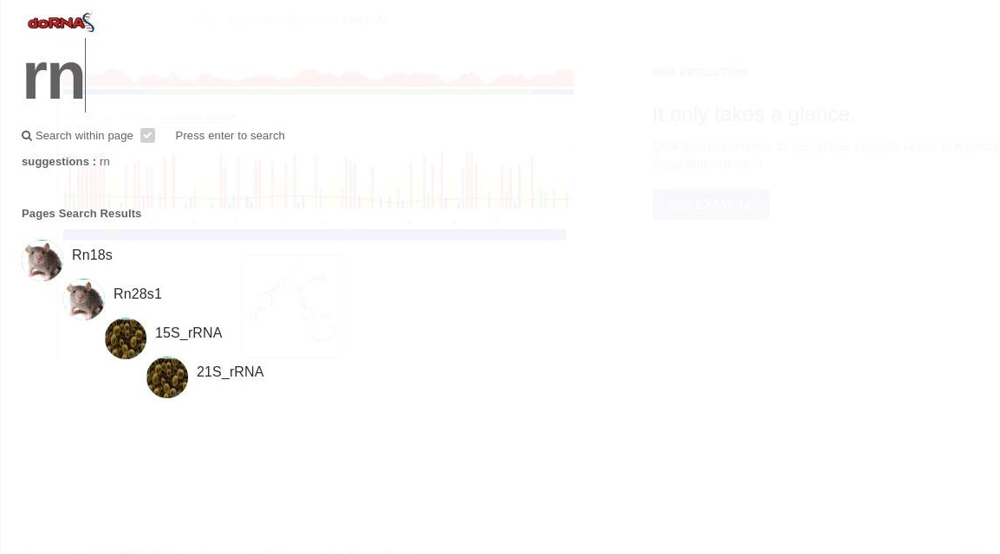
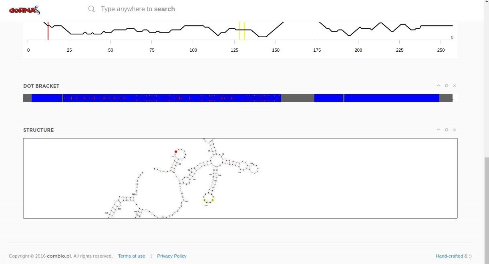
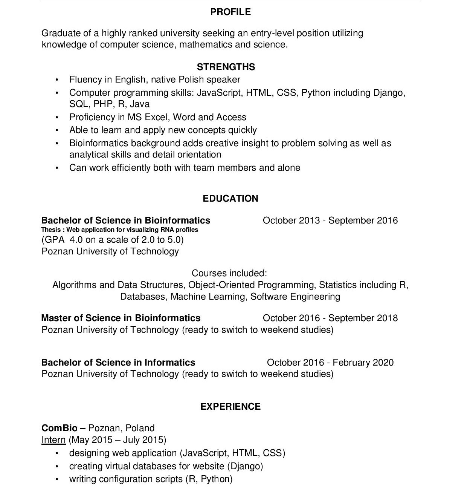

About me.
My name is Mateusz. I am currently studying informatics at University of Technology in Poznan. I already have finished bachelor studies of bioinformatics at this same university. My main hobby and passion is Javascript. Besides that I fancy playing sports (mainly basketball and football) including e-sports (CS, FIFA, HearthStone). My goal is to work as Front-end developer so I study everyday and look for best offer. You can chceck out my experience and projects here. If u want to contact me or check my CV click here.
I have been creating websites since I was in primary school. I have always enjoyed that. I designed site for my class, team etc. Every next site was better so I was. I want to be the best at it and I am ready to work in this direction for my whole life.
Experience
Like I was writing in my about I have been creating a lot of simple pages in my life. I know HTML and CSS very well and I feel confident using these technologies. When I started studying I met JavaScript and I have been learning it since then (3 years). On my second year I was an intern at ComBio (bioinformatics company). I was working in small group on project. Our main goal was to create web-application (called doRNAs) for RNA visualization. I was responsible for user interface (JS, jQuery, HTML,CSS) but also for creating virtual database in Django (Python).
Recently I have been learning a new libraries of JavaScript such as d3 or AngularJS. I created a simple clock application to show my skills in these technologies. You can check it out and my all projects on my github. If you are interested in hiring me contact me here. You can also preview and download my CV.
The main aim of "doRNAs" application was to give opportunity for biologists to see and compare different RNA samples. I designed a feature, which allow users to search experiments from database by its name, organism or id. It was accesible from every point on website and it was launched after typing one letter by user. I use for this AJAX, so the site was running fast.

This application gives also a lot of information about experiment. I created a lot of charts (Higcharts, Highstock) and wrote several scripts by myself which interact with these charts. "doRNAs" provides also a visual presentation of RNAs itselft. User can look at every element of it and edit to compare it with other experiments. Library fornac.js was very useful for that.

Curriculum Vitae

If you want to see my personal informations such as adress and phone u can download it here in PDF or DOC.
Contact